中文简历
杨栋森
DevOps / SRE / 运维开发实习生
个人简介
辽宁科技大学网络工程专业 2027 届本科生，求职方向为 DevOps / SRE / 运维开发。
长期维护个人 PVE Homelab 与多台 Linux 服务器，具备 Docker Compose 服务部署、Nginx 反向代理、远程组网、基础监控、日志排查与文档沉淀经验。
熟悉 Linux 常用操作、容器化部署、服务状态检查、接口连通性验证和多组件项目本地联调，能够使用 AI Agent 辅助日志分析、脚本编写、代码阅读和文档初稿整理，并通过本地运行、接口验证和部署结果进行人工复核。
教育经历
辽宁科技大学2023.09 - 2027.07
网络工程｜本科｜2027 届
校三等奖学金｜CET-4
求职方向
DevOps 实习 / SRE 实习 / 运维开发实习 / 云原生运维实习 / 部署联调实习
能从 Linux、项目部署、日志排查、接口联调、文档交付和自动化工具维护等工作切入。
实习经历
梦溪比特（鞍山）软件信息技术有限公司｜Go 后端开发实习生2025.09 - 2026.03
计算机软件｜实习项目：MedKnow 养生知识科普短视频平台｜Go / Gin / Gorm / MySQL / Docker / Git
- 参与后端项目结构梳理，理解用户、专家、视频、评论、收藏、浏览历史等模块的数据关系与接口调用流程。
- 配合前端进行接口联调，验证接口返回、参数传递和业务流程，协助定位数据库连接、端口占用、配置文件和依赖安装等运行问题。
- 使用 Docker 整理并验证本地运行环境，降低环境差异导致的联调成本；整理运行说明、配置注意事项和问题记录，为演示、部署和维护提供文档支持。
技术能力
- Linux / 运维基础：Linux 日常使用、systemctl 服务状态查看、journalctl 日志定位、ss 端口检查、curl HTTP 接口连通性验证、df / free 资源查看；具备 PVE / 自托管服务器维护、1Panel 面板部署、静态站点发布和故障记录整理经验。
- 容器与部署：Docker / Docker Compose / Podman 基础使用，能整理 Compose 编排文件、环境变量、端口映射、数据目录、服务依赖和部署文档；接触 Nginx 反向代理、MariaDB / MySQL、Redis、Python Worker 等组件联调。
- 网络与远程访问：了解 TCP/IP、HTTP、DNS、反向代理和常见端口排查思路；实践过 Tailscale、WireGuard / OpenWrt 旁路网关、Nginx / OpenResty 反代和内网服务访问配置。
- 云原生 / 监控学习：了解 Kubernetes / k3s、Helm、Prometheus、Grafana 等基础概念，实践过 Deployment、Service、Pod、镜像更新、版本回滚、Helm 组件部署和常见镜像拉取问题排查。
- 开发与自动化基础：了解 Python / FastAPI、Go / Gin / Gorm、Shell、Laravel、Vue、React、TypeScript 等项目结构，能阅读代码、定位配置或接口问题并配合前后端联调。
- 工程协作与 AI 工具：熟悉 Git/GitHub、README / 部署文档 / 接口说明 / 检查清单 / 博客复盘整理；使用 AI 工具辅助代码阅读、日志分析、命令生成和文档初稿，并通过本地运行、接口验证和部署结果进行人工复核。
项目经历
个人 Homelab 运维与服务迁移实践PVE / Docker Compose / Nginx / Tailscale
- 基于 PVE 搭建个人 Homelab 环境，长期维护 Linux 虚拟机、Docker 服务机、代理网关和多类自托管服务，作为 DevOps、SRE 与云原生技术实践平台。
- 将 PVE 宿主机直接承载 Docker、面板、媒体、代理和反代服务的混合架构，逐步整理为 PVE 宿主机、infra-docker-01、net-gateway-01 和业务 VM 的分层结构，降低排障边界混乱和宿主机暴露风险。
- 使用 Docker Compose / Dockge 管理多个自托管服务，规范 Stack、.env、配置目录、数据目录和 Git 版本化流程，形成可迁移、可回滚、可复查的服务管理方式。
- 配置 Tailscale、WireGuard / OpenWrt 旁路网关和 Nginx / OpenResty 反向代理，处理远程访问、Docker Hub 拉取、代理链路、IP 冲突、端口暴露和服务迁移等问题，并沉淀博客与检查清单。
Kube-Sentinel｜Kubernetes 夜间值班哨兵工具Go / Kubernetes / Alertmanager / Prometheus
- 面向 Kubernetes 夜间值班场景实现轻量哨兵工具，接收 Alertmanager Webhook 告警并映射为 HealingRequest，形成从告警、分诊、最小处置到审计记录的闭环。
- 围绕 Deployment L1 自动处置设计安全边界，在自动写操作前加入维护窗口、速率限制、爆炸半径、熔断和写前快照校验，避免自动化脚本直接进入高风险执行路径。
- 输出 Kubernetes Event、结构化审计、Prometheus 指标和 Telegram incident card，并维护 Helm / YAML 安装清单、Grafana Dashboard、ServiceMonitor、发布与回滚文档。
Astralith｜轻量级自动化运维平台FastAPI / Ansible Runner / GitOps / AI 运维分析
- 面向个人 PVE / Homelab 和中小型 Linux 服务器环境，设计并实现轻量级自动化运维平台，覆盖登录认证、主机管理、内置运维模块、任务创建、定时巡检、执行日志保存和前端日志展示。
- 远程操作统一通过 Ansible Runner 执行，Celery + Redis 负责异步任务，APScheduler 负责定时触发，SQLite 保存任务状态、每台主机 stdout / stderr 和原始事件，便于后续排障与答辩演示。
- 扩展 GitOps desired-state sync、Desired / Actual diff、Apply Plan、Docker Compose Apply 记录和回滚元数据，强调人工审批、策略校验、审计日志和可回退边界。
- 预留 Agent 辅助运维设计：将任务输出、错误日志和执行事件整理为 Evidence Pack，由 Agent 生成故障分析、Runbook 或变更建议；平台侧保留人工确认和受控执行边界。
Ocean｜海洋生态样本与设备巡检管理平台Docker Compose / Nginx / Laravel / MySQL / Redis / Worker
- 参与前后端分离业务系统的本地运行、部署联调和文档整理，覆盖巡检任务、样本登记、检测结果、异常处理、分析任务和统计看板等流程。
- 根据项目文档与配置文件梳理服务启动流程，使用 Docker Compose 编排 Nginx、Laravel、MariaDB、Redis 和 Python Worker 等组件，整理端口、环境变量、数据库初始化、缓存队列和服务依赖关系。
- 配合后端接口、数据库、缓存队列和异步 Worker 本地联调，通过容器状态、服务日志、HTTP 返回和页面访问结果定位配置或依赖问题，并维护部署说明、接口说明和交付检查清单。
开源与工程实践
lwe｜Linux Wallpaper Engine 桌面工具GitHub Releases / AUR / 中英文文档 / Linux 适配
- 个人维护的 Linux 桌面开源项目，用于浏览、管理和应用 Wallpaper Engine 内容，作为开源发布、Linux 适配和工程维护实践保留。
- 维护 GitHub Releases、AUR 包、中英文在线文档和用户反馈记录，接触 Linux 桌面兼容、打包发布、版本说明、文档同步和开源项目维护流程。
CubeSandbox 开源贡献GitHub PR / 代码审查 / 命令行验证
- 参与 TencentCloud/CubeSandbox 开源项目贡献，修改涉及 CubeAPI、CubeMaster 与 cubemastercli 等模块；通过 PR、审查反馈、命令行验证和文档阅读熟悉开源协作流程。
自托管与 AI 工具链实践PVE / Linux / systemd / OpenWrt / 文档化排障
- 维护个人 PVE / Linux 自托管环境和本地开发工作站，实践服务启动、日志定位、Nginx 反向代理、OpenWrt 旁路代理、Docker 服务迁移、静态站点发布和故障记录整理。
- 使用并维护 Hermes、OpenClaw、OpenCode 等 AI 工具链，将部署步骤、排障记录和协作约定沉淀为后续项目可复用的检查清单。
个人博客与开发环境维护Astro / Linux / dotfiles
- 维护个人技术博客与 Linux 工作站配置，记录 Linux、开发工具、部署排查、项目实践与学习笔记；dotfiles 涉及 zsh、Neovim、Git/GPG、代理、容器和多语言开发环境。
奖项与证书
- 辽宁省大学生智能技术应用大赛一等奖（智能化在线程序测评系统）
- 全球校园人工智能算法精英大赛东北赛区一等奖、全国总决赛三等奖
- 辽宁省“中软国际--卓越杯”大数据挑战赛二等奖；辽宁省 iCAN 创新创业大赛二等奖
- 辽宁科技大学优秀学生三等奖学金｜CET-4
自我评价
对 Linux、DevOps / SRE、自动化运维和云原生方向有持续兴趣，能够参与项目部署、服务启动、日志排查、接口验证、监控告警学习、文档交付和平台工具维护等工作。
重视可运行、可验证、可复现和可交接，习惯通过本地运行、接口验证、页面访问和日志结果确认修改是否有效。
能够使用 AI 工具提高代码阅读、日志分析和文档整理效率，同时保持人工复核和结果验证。
证书与获奖展示
共 14 项，点击图片查看大图
精选奖项已补充到简历正文；网页保留完整证书墙，便于投递时作为补充材料展示。
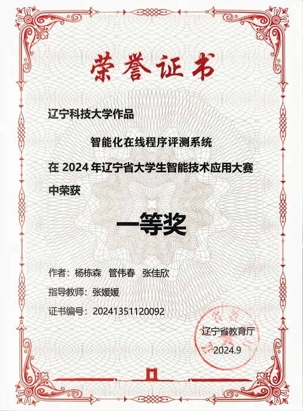
重点展示
2024年辽宁省大学生智能技术应用大赛
一等奖｜2024.09
智能化在线程序测评系统
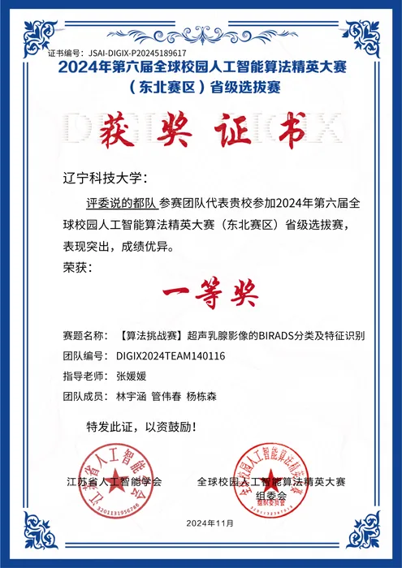
重点展示
2024年第六届全球校园人工智能算法精英大赛东北赛区省级选拔赛
一等奖｜2024.11
超声乳腺影像的 BIRADS 分类及特征识别
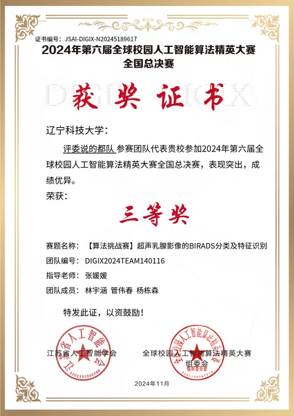
重点展示
2024年第六届全球校园人工智能算法精英大赛全国总决赛
三等奖｜2024.11
超声乳腺影像的 BIRADS 分类及特征识别
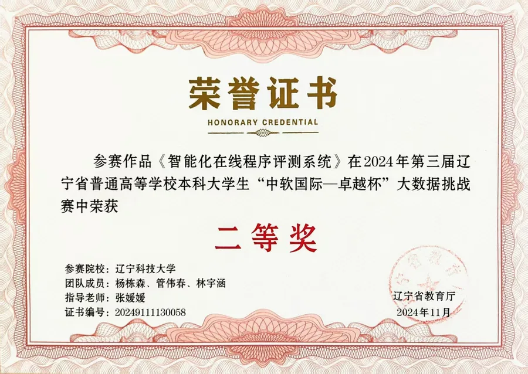
重点展示
2024年第三届辽宁省“中软国际--卓越杯”大数据挑战赛
二等奖｜2024.11
智能化在线程序测评系统
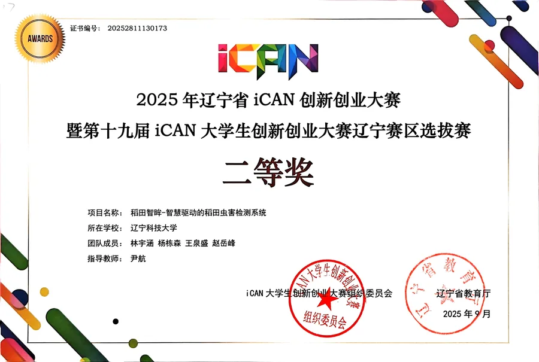
重点展示
2025年辽宁省 iCAN 创新创业大赛暨第十九届 iCAN 大学生创新创业大赛辽宁赛区选拔赛
二等奖｜2025.09
超音智检--智能移动的组台检测系统
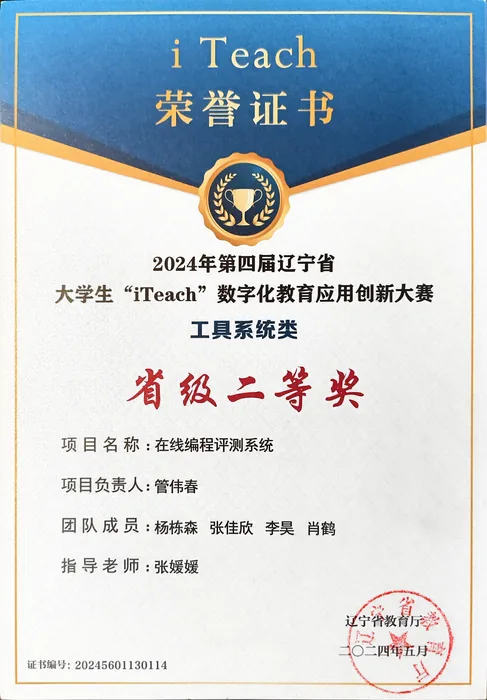
重点展示
2024年第四届辽宁省大学生 iTeach 数字化教育应用创新大赛
省级二等奖｜2024.05
工具系统类
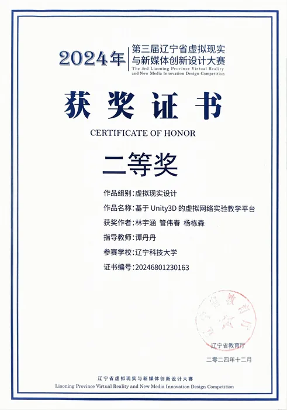
省级
2024年第三届辽宁省虚拟现实与新媒体创新设计大赛
二等奖｜2024.12
基于 Unity3D 的虚拟网络实验教学平台
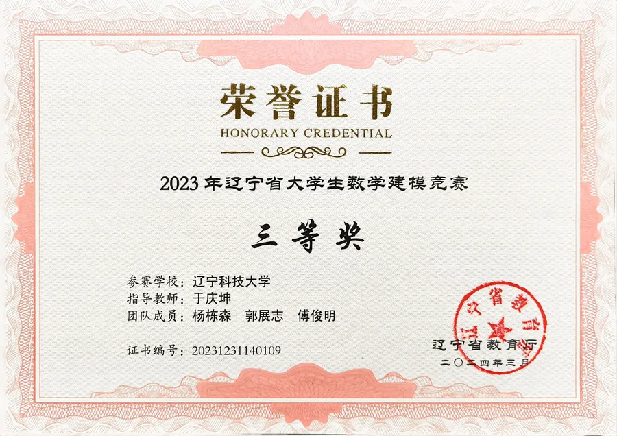
省级
2023年辽宁省大学生数学建模竞赛
三等奖｜2023.08
数学建模竞赛
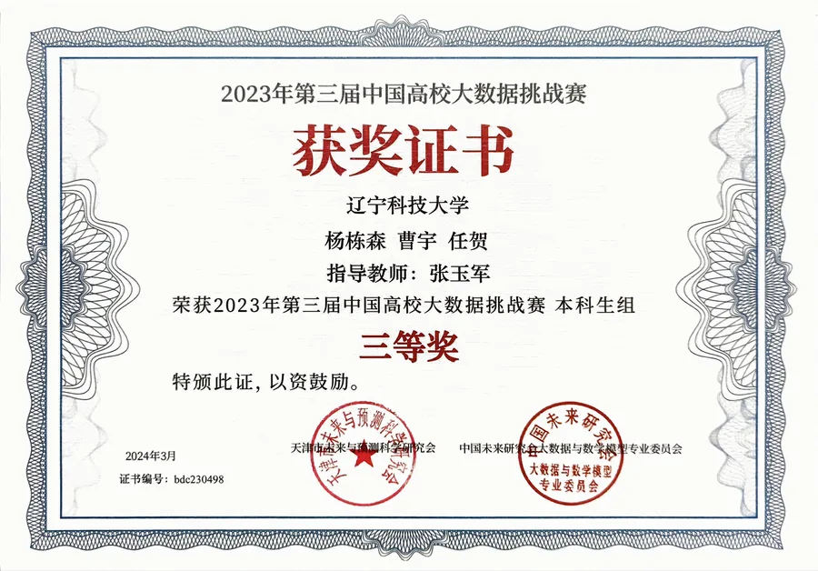
竞赛
2023年第三届中国高校大数据挑战赛
本科生组三等奖｜2024.03
大数据挑战赛
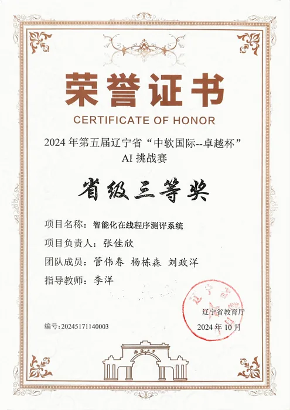
省级
2024年第五届辽宁省“中软国际--卓越杯”AI 挑战赛
省级三等奖｜2024.10
AI 挑战赛
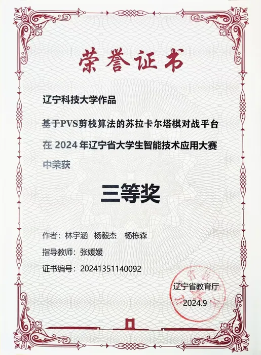
省级
2024年辽宁省大学生智能技术应用大赛
三等奖｜2024.09
基于 PVS 剪枝算法的苏拉卡尔塔棋对战平台
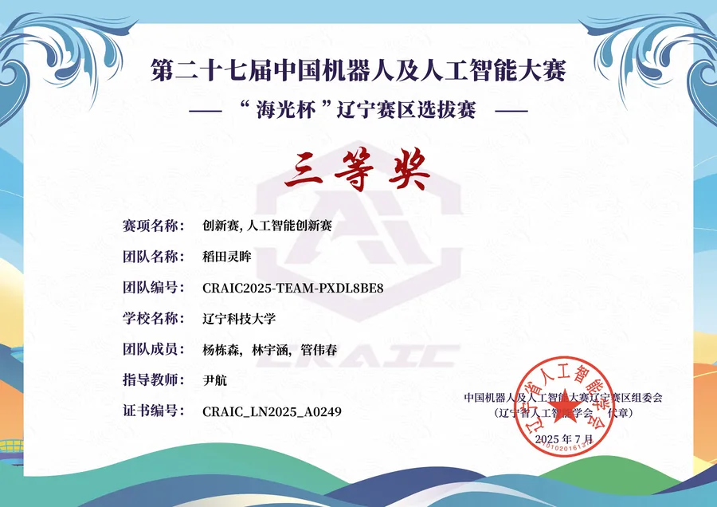
赛区
第二十七届中国机器人及人工智能大赛“海光杯”辽宁赛区选拔赛
三等奖｜2025.07
创新赛·人工智能创新赛
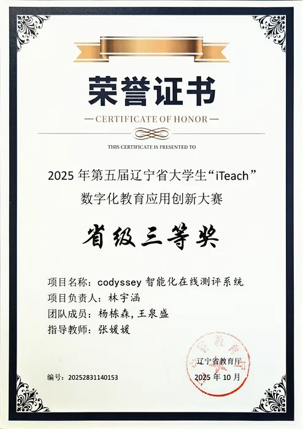
省级
2025年第五届辽宁省大学生 iTeach 数字化教育应用创新大赛
省级三等奖｜2025.10
codyssey 智能化在线评测系统
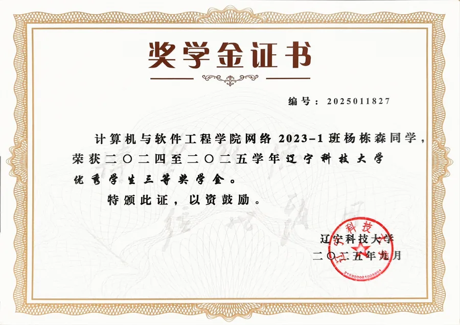
校级
辽宁科技大学优秀学生奖学金
优秀学生三等奖学金｜2025.08
学业奖学金